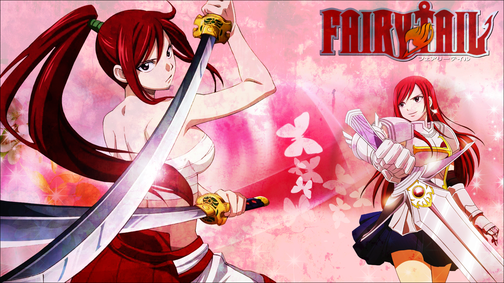
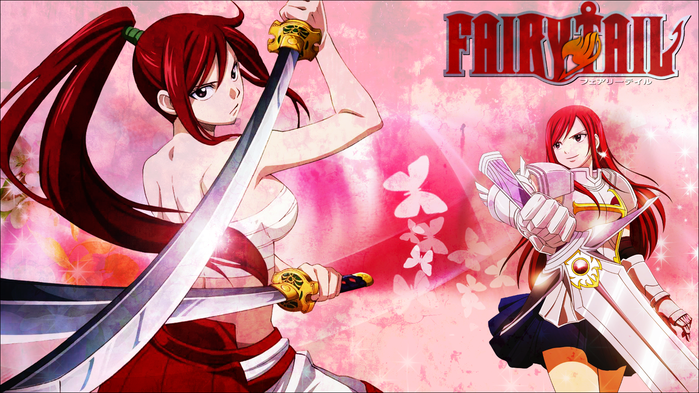

Erza Scarlet is one of the main female protagonists of the series. She is a Requip Mage which allows her to change armors and weapons during battle or even change outfits. Also, her surname, Scarlet, was given to her from an old friend, Jellal Fernandez. It comes from the color of her scarlet hair. She is an S-Class Mage of Fairy Tail, which means one of the strongest female wizard in the guild. She is protective of her friends and she has stated many times that her strength comes from the bonds of her friendship with her guild mates. She can be scary but her friends, such as Natsu and Gray, have a protective side towards her. She is well known to many for her strength. Erza had a tough childhood that came back to haunt her but learned to live on with her life.